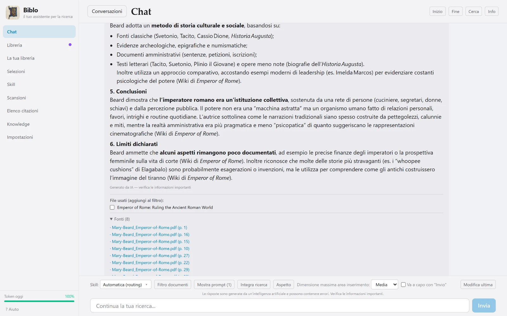
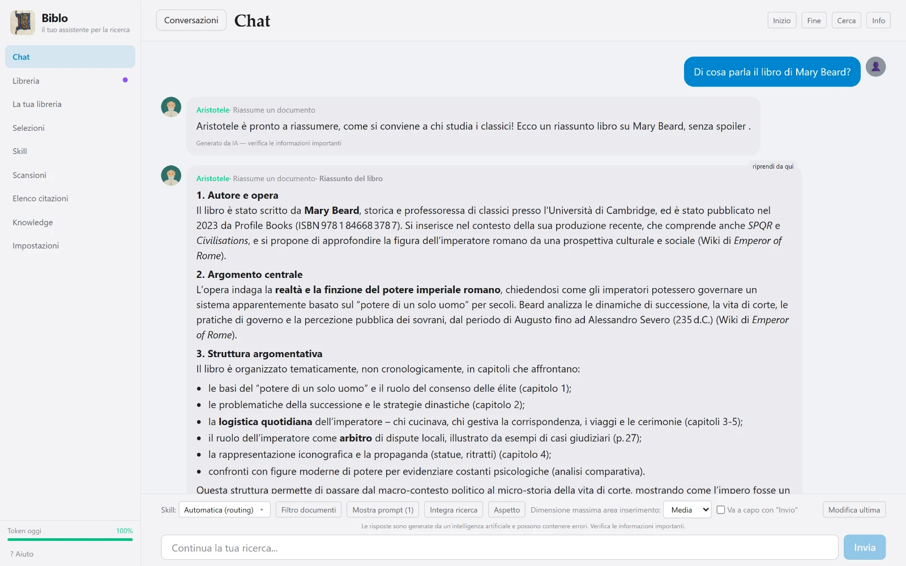
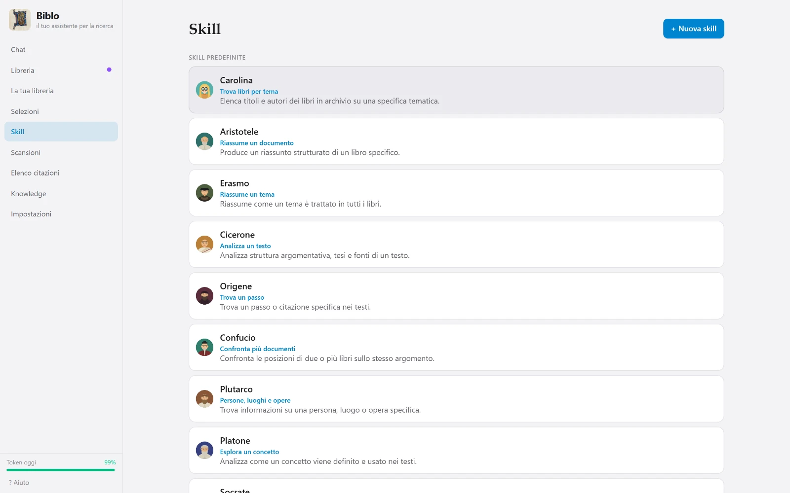
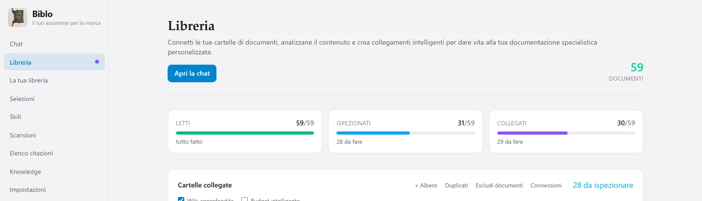
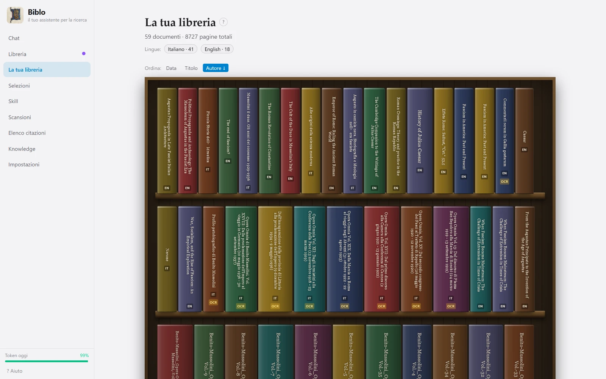
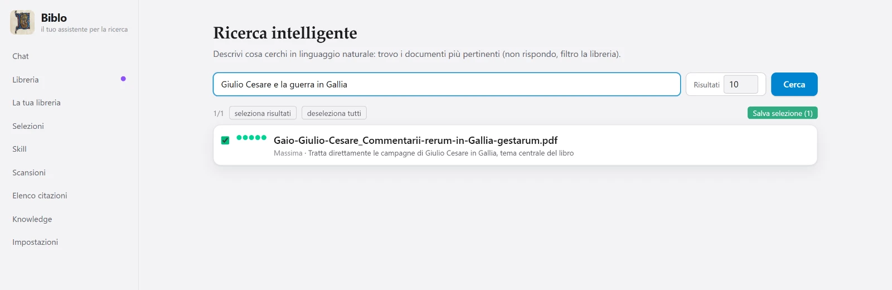
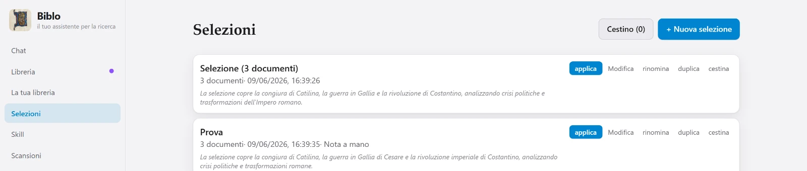
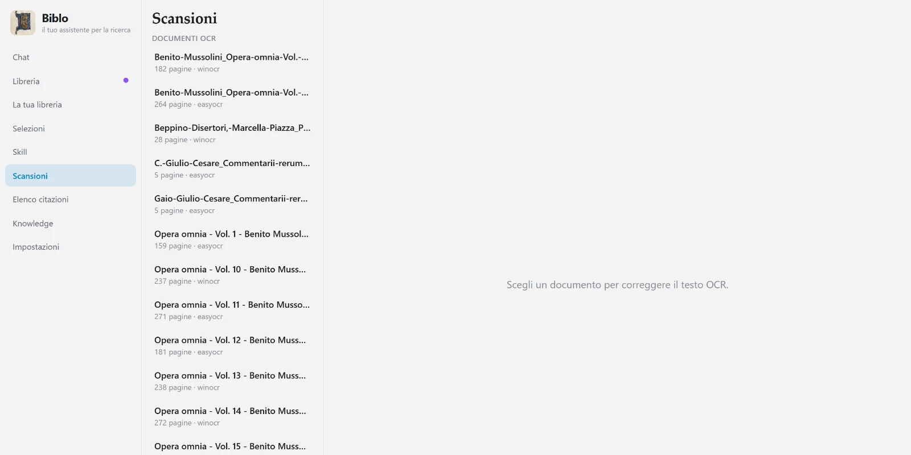
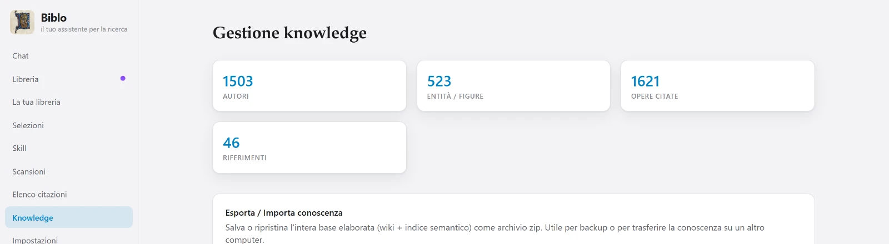

Chat
Risposte con le fonti
La chat non si limita a rispondere: elenca i file che ha usato e i passaggi citati con la pagina. Da lì puoi aprire il PDF, o spuntare i documenti per continuare a lavorare solo su quelli.

Biblo legge i PDF che hai già sul computer, li indicizza in locale e ti lascia fare domande come le faresti a un collega. Ogni risposta dice da quale documento e da quale pagina viene.
Gratis · Windows 10 e 11 a 64 bit
— download finora

Se hai centinaia di volumi, il problema non è più trovare un termine: è ricordare in quale libro se ne parlava, e come. Biblo tiene insieme le due cose — cerca nel significato, non nelle lettere, e ti riporta il passaggio esatto da cui ha tratto quello che dice.
Chiedi «come veniva giustificato il consenso» e trova i passaggi che ne parlano, anche se quelle parole non ci sono.
Sotto ogni risposta ci sono i file usati e i brani citati con il numero di pagina. Un clic apre il PDF nel punto giusto.
Se nei tuoi documenti la risposta non c'è, te lo dice invece di inventarla.
Poi la libreria resta pronta: si aggiorna solo quando aggiungi documenti nuovi.
Indichi dove stanno i PDF. Restano dove sono: niente caricamenti, niente copie in cloud, niente cartelle da riorganizzare.
Tre fasi separate e ripetibili. Leggi prepara il testo per la ricerca. Ispeziona costruisce le schede di autori, opere e figure. Trova collegamenti mette in relazione i documenti fra loro.
Scrivi la domanda in chat. Biblo sceglie l'assistente adatto, cerca nei testi, seleziona i passaggi e risponde citandoli.
Ogni schermata qui sotto è l'applicazione vera, non un mockup.
La chat non si limita a rispondere: elenca i file che ha usato e i passaggi citati con la pagina. Da lì puoi aprire il PDF, o spuntare i documenti per continuare a lavorare solo su quelli.

Riassumere un volume, confrontare due testi, trovare un passo, analizzare un'argomentazione: ogni compito ha il suo assistente, con il suo modo di leggere. Biblo sceglie da solo quello adatto alla domanda — oppure lo scegli tu.

A colpo d'occhio: quanti documenti sono stati letti, quanti ispezionati, quanti collegati. Le tre fasi sono separate apposta, così puoi leggere tutto subito e approfondire con calma.

I tuoi documenti diventano volumi su una mensola, ordinabili per data, titolo o autore, con la lingua e il segno delle scansioni. Un clic apre il libro.

Descrivi un tema e Biblo ti dice quali volumi ne parlano davvero, in ordine di pertinenza. Il risultato si salva come selezione e diventa il perimetro della conversazione.

Tutto ciò che i tuoi testi citano — opere, autori, figure — raccolto in un indice unico e consultabile, con quante volte compare ogni voce.

I PDF senza testo vengono riconosciuti con l'OCR di Windows, o con EasyOCR per le lingue che non copre, e diventano cercabili come gli altri.
Restringi la conversazione a un gruppo di documenti: fuori da quella selezione Biblo non guarda, né per cercare né per citare.
Interfaccia in cinque lingue, tema chiaro o scuro e zoom regolabile: tutto scala, niente diventa illeggibile.
Schede, collegamenti e conversazioni stanno in file sul tuo disco, e si esportano quando vuoi.
Ogni schermata è l'applicazione vera, con una libreria vera — e nella lingua che hai scelto qui sopra.



Scorri di lato per vedere il resto →
La lettura, l'indice e l'archivio delle ricerche sono locali: nessun file viene caricato da nessuna parte. Quando fai una domanda, al modello linguistico parte solo il brano necessario a risponderti, insieme alla domanda. Non passa da server nostri e non lo conserviamo.
I PDF restano nelle tue cartelle. L'indice vive accanto a loro, sul tuo disco.
Alla chat esce il brano che serve per quella singola risposta, non la biblioteca.
Biblo usa una tua chiave del fornitore del modello: le richieste passano dal tuo account, non dal nostro.
Installazione per il tuo utente: nessun permesso di amministratore, niente da configurare a mano.
— download finora
Il file non è ancora pubblicato: il pulsante porta alla pagina dei rilasci.
(Get-FileHash Biblo_1.0.0_x64-setup.exe -Algorithm SHA256).Hash
8723E0544EFCC8F18C4F77E4F912BA0170CBAFFE390BE827EDD96990E16BBF86
A 64 bit. Per ora non ci sono versioni per macOS e Linux.
Circa 2,5 GB: l'applicazione, il modello che trasforma il testo in numeri e l'indice della tua libreria.
Gratuita, si ottiene in un minuto dal sito del fornitore. Senza chiave la parte AI non può funzionare, e l'app te la chiede all'avvio.
Tutto gira sul processore. Su macchine modeste la prima lettura è lenta, ma l'app tiene i core liberi apposta per non bloccarti il computer.
Per leggere e cercare nei documenti no: quella parte è tutta locale. Serve per la chat e per l'ispezione, perché la risposta e le schede vengono generate da un modello linguistico che sta online.
L'applicazione è gratuita. Serve una chiave del fornitore del modello (Cerebras), che ha un piano gratuito: il consumo della chat pesa su quel piano, non su di noi.
PDF, compresi quelli scansionati: se un documento non ha testo, Biblo lo passa all'OCR e poi lo tratta come tutti gli altri.
Biblo è sviluppato su una libreria di 59 volumi e 8.727 pagine, e lavora normalmente. Il limite pratico non è il numero di file ma il tempo della prima lettura, che dipende dal tuo processore.
È l'avviso che Windows mostra per ogni programma non firmato con un certificato commerciale. Biblo non lo è ancora. Puoi verificare l'impronta SHA-256 del file scaricato con il valore pubblicato qui sopra: se corrisponde, il file è esattamente quello pubblicato.
Da parte nostra no: non riceviamo né conserviamo i tuoi file. Alla generazione di una risposta viene inviato al fornitore del modello solo il brano necessario; il trattamento da parte sua è regolato dai suoi termini, che trovi richiamati nell'informativa.
Sì, ed è il funzionamento normale: la chiave la inserisci tu e le richieste passano dal tuo account presso il fornitore.
No. I PDF restano dove sono sempre stati, nelle tue cartelle. Vengono rimossi soltanto l'applicazione e i dati che ha prodotto lei.